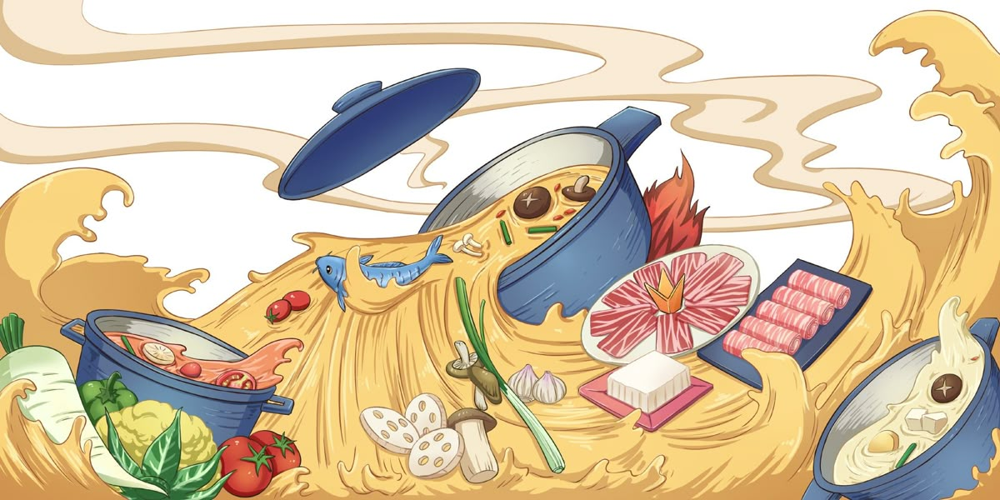

URBAN EATS
Temukan Jenis-Jenis Makanan
Yang Menarik
Temukan berbagai jenis makanan yang menarik dan lezat di sini. Jelajahi kategori makanan yang beragam dan nikmati pengalaman kuliner yang tak terlupakan.
Explore Categories
TENTANG KAMI
Lebih dari sekedar makanan
Urban Eats bukan hanya sekedar web makanan biasa, tapi juga tempat yang dimana anda akan menemukan berbagai macam jenis makanan yang menarik dan lezat.
Jelajahi kategori makanan yang beragam dan temukan hidangan favorit Anda. Dari makanan tradisional hingga hidangan modern, kami memiliki sesuatu untuk setiap selera.
EXPLORE